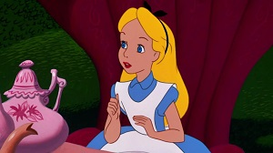
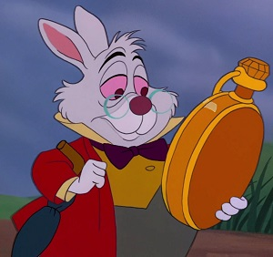
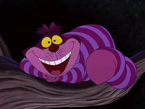
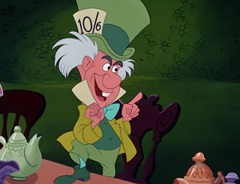
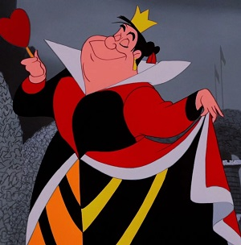

Personagens
-
Alice Liddell
É a protagonista da história. É racional e corajosa, e vai fazendo considerações à medida que a aventura prossegue. Muitas vezes representada por uma menina de cabelos loiros amarrado por uma faixa amarela, no entanto, sua cor de cabelo não foi especificado na obra. E se popularizou através das primeiras ilustrações da obra literária. Pela primeira vez, uma protagonista de uma obra infantil era realmente parecida com uma criança.
-
Coelho Branco
É quem inicia a aventura, quando Alice o segue até a toca. Ele carrega um relógio e parece estar muito atrasado para alguma coisa. Em contraste com a Alice, o Coelho Branco tem medo de tudo - da sua rainha, da Alice e das próprias situações onde se encontra. Esta oposição foi pretendida pelo autor para enfatizar os atributos positivos da personalidade principal. E durante o julgamento de um valete de copas (o último capítulo), dá-se uma mudança repentina na covardia, revelando uma vontade de manipular.
-
Gato Cheshire
É extremamente independente e consegue desaparecer e aparecer. Carroll obteve o nome na expressão idiomática da língua inglesa sorrir como um gato de Cheshire. Além disso, o gato representado nas figuras de Tenniel é considerado representativo da raça British Shorthair, devido à forma da boca, considerada como um sorriso.
-
O chapeleiro Maluco
São figuras retiradas de expressões correntes no período vitoriano da língua inglesa louco como uma Lebre de Março ou louco como um Chapeleiro, devido à inalação de vapor de mercúrio usado na fabricação de feltro, resultando em transtornos psicóticos. Estão perpetuamente na hora do chá, porque, segundo eles, o Chapeleiro discutiu no mês de Março com o Tempo e, em vingança, este não muda a hora para os dois habitantes. O Chapeleiro aparentemente teve problemas com a Rainha ao cantar uma música na sua presença, pelo que esta sentenciou a sua decapitação sob o pretexto de "estar a matar o Tempo".
-
A rainha de Copas
É talvez a caricatura da mãe das irmãs Liddell; É extremamente autoritária e impulsiva, estando constantemente a ordenar aos seus soldados (cartas de baralho) decapitar todos. Porém o Grifo disse que tal é apenas uma fantasia dela, uma vez que depois ninguém morre.